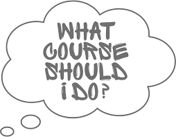

11 Courses

There are many courses available to you within both Scripps Institution of Oceanography and the great UCSD campus!
In the Décima lab we typically follow the curiculum requirments of the Biological Oceanography (BO) curricular group.
With that said, this is your program and you should get out of it what you want, including the academic training of interest to you.
There are some courses more relevant to students in the Décima lab, so here we have some suggestions and provided resources for courses offered at Scripps Institution of Oceanography that lab members have also found useful.
Course of study should be selected with the program requirements in mind - as always, refer to the Intercampus Marine Science Program Manual for details.
11.1 Suggested course schedule
Students generally take a full time credit load of 12 credits per quarter while they are fulfiling the credit requirements for the degree.
Several SIO courses are offered on an alternating basis every 2 years. Particularly for MS students, you may want to take advantage of courses when they are offered, even if this means taking them out of the natural ‘sequence’.
### Year 1
Most students take many of their core program requirements, marked [C] in the first year to build a good oceanographic foundation and also prepare for the departmental exam at the end of the first year.
First Year: Fall Quarter SIOB 280: Biological Oceaography [C] SIOC 210: Physical Oceanography [C] SIOB 279: Ecology Seminar in Biological Oceanography
Winter Quarter SIOG 260: Marine Chemistry [C] SIOB 272B: Advanced Statistical Techniques SIOB 277. Deep-Sea Biology SIOB 279: Ecology Seminar in Biological Oceanography
Spring Quarter SIOB 270. Pelagic Ecology SIOB 279: Ecology Seminar in Biological Oceanography
Typically, most remaining coursework is completed in years 2-3, but this will vary by individual.
11.1.1 Other courses to take when offered:
SIOB 271: Marine Zooplankton
Excerpt from Scripps Handbook about curicular group requirements:
Biological Oceanography Required Coursework: ● SIOC 210. Physical Oceanography (4 units) ● SIOG 260. Marine Chemistry (4 units) ● SIOB 280. Biological Oceanography (4 units) ● One of the following: o SIOG 240. Marine Geology (4 units) o SIOG 255. Paleobiology and History of Life (6 units) ● One of the following: o SIOB 270. Pelagic Ecology (4 units) o SIOB 270A. Fisheries Oceanography (4 units) o SIOB 275A. Benthic Ecology (4 units) o SIOB 277. Deep-Sea Biology (4 units) ● One of the following: o SIOB 271. Marine Zooplankton (5 units) o SIOB 282. Phytoplankton Diversity (4 units) o SIOB 283. Phycology: Marine Plant Biology (5 units) o SIOB 284. Marine Invertebrates (6 units) o SIOB 294. Biology of Fishes (5 units) o SIOB 296. Marine Tetrapods (4 units)
Elective Coursework: Other coursework required for the Plan II (comprehensive exam) masters will be recommended by the student’s guidance committee, usually including: one quarter of SIO 278, Seminar in Ocean Biosciences (or equivalent participatory seminar); a course in introductory parametric statistics; and at least one advanced-level course in physical, chemical, or geological oceanography.